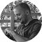
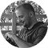

Prva Rails Girls radionica u Novom Sadu je uspešno održana u januaru ove godine. Zbog ogromnog interesovanja, organizujemo Rails Girls Novi Sad 2! Tokom dvodnevne radionice imaćete priliku da se upoznate sa prvim koracima pravljenja web aplikacija. Nije neophodno imati predznanje, potreban je samo laptop, interesovanje i želja da se malo slobodnog vremena odvoji na neformalno učenje početnog nivoa programiranja. I sve to u prijateljskom okruženju u malim grupama, potpuno besplatno i u pozitivnoj volonterskoj atmosferi. Na sledećem linku možete videti kako je izgledala prva Rails Girls NS radionica.
Rails Girls Novi Sad je deo globalne inicijative koja ima za cilj da približi IT svet ženama i osnaži njihovo interesovanje za aktivnu izgradnju web-a. Ruby on Rails je platforma uz pomoć koje se web aplikacije mogu brzo razvijati, a zasnovana je na programskom jeziku Ruby.
Rails Girls Novi Sad radionica će se održati 13. i 14. juna 2015. godine u Coworking prostoru Pionirska, Novi Sad, Pionirska broj 4 (pored Studija M), II sprat, stan 7, kao i u prostorijama CK13 Omladinskog centra, Novi Sad, Vojvode Bojovića broj 13.
Proces prijavljivanja i selekcije je završen.
| 15.00 - 15.30 |
Upoznavanje i uvodna rečPrvi dan započinjemo upoznavanjem, uz uvodnu reč mentora i organizatorki. |
|---|---|
| 15.30 - 16.45 |
InstalacijaSledi instalacija neophodnog softvera na vašim laptopovima. |
| 16.45 - 17.00 |
Pauza za kafu |
| 17.00 - 19.00 |
Try RubyUpoznavanje sa Ruby programskim jezikom. |
| 19.00 - 21.00 |
Druženje u baru Bunker HillNeformalno druženje za one koje budu raspoložene, plaćeno prvo piće u ime dobrodošlice od strane sponzora firme Kolosek IT. |
| 13:00 - 13:15 |
Registracija učesnicaDrugi dan započinjemo registracijom učesnica uz kafu i eventualnim pitanjima nakon jučerašnjeg dana. |
|---|---|
| 13:15 - 15:00 |
Pravljenje aplikacijaUpoznavanje sa osnovama programiranja u malim grupama. Razvijanje sopstvenih aplikacija uz pomoć mentora. Pauze za kafu i osveženje. |
| 15:00 - 16:00 |
Pauza za ručak |
| 16:00 - 18:00 |
NastavakDalji rad na aplikaciji uz pomoć mentora. Pauze za kafu i osveženje. |
Koliko košta učešće na radionici?
Učešće na radionici je potpuno besplatno!
Ko sve može da se prijavi?
Devojke i žene svih uzrasta i zanimanja. Potrebno je samo imati laptop, koji ćete poneti, i osnovno znanje o korišćenju računara.
Znam da programiram, kako mogu da pomognem?
Ukoliko imate želju da se pridružite našem mentorskom timu, pišite nam.
Imate još neko pitanje ili nedoumicu?
Kontaktirajte nas putem e-mail-a railsgirlsnovisad@gmail.com, Twitter-a ili Facebook stranice.
Organizaciju i održavanje druge Rails Girls radionice u Novom Sadu pomogli su:
Ukoliko želite da kao partner ili sponzor pomognete održavanje neprofitne Rails Girls Novi Sad radionice pišite nam.
 Aleksandra Vukošić, organizatorka
aleksandra.vukosic@gmail.com
Kristina Stojaković, organizatorka
kristina.stojakovic@gmail.com
Jelena Keravica, mentorka
jelena.keravica@gmail.com

Mladen Danić, mentor
@Maidomax
Nebojša Zorić, mentor
office@kolosek.com
Igor Šarčević, mentor
@igor_sarcevic
Nemanja Keča, mentor
nemanja.keca@gmail.com
Nemanja Čorlija, mentor
@chorlya
Aleksandra Vukošić, organizatorka
aleksandra.vukosic@gmail.com
Kristina Stojaković, organizatorka
kristina.stojakovic@gmail.com
Jelena Keravica, mentorka
jelena.keravica@gmail.com

Mladen Danić, mentor
@Maidomax
Nebojša Zorić, mentor
office@kolosek.com
Igor Šarčević, mentor
@igor_sarcevic
Nemanja Keča, mentor
nemanja.keca@gmail.com
Nemanja Čorlija, mentor
@chorlya